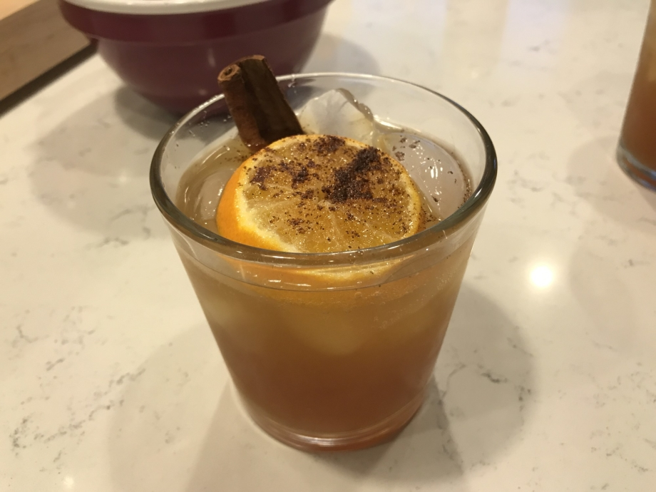

Taste of Fall

For those who wish for a stronger addition to their fall celebrations.
Ingredients:
- 1 oz Fireball cinnamon whiskey
- 2 oz spiced apple cider
- 1 oz lemon-lime soda
- 1 cinnamon stick
- 1 orange slice
- 1 pinch powdered cloves
Directions
- Add ice to a rocks glass
- Add the whiskey then the cider and the soda, no need to mix
- Add the cinnamon stick followed by the orange slice
- Dust the top of the orange with the powdered cloves
Home